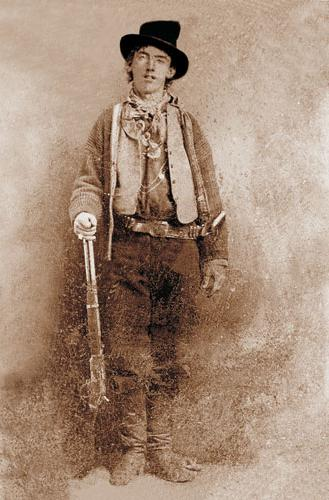

Billy the KID
Fora da lei

Henry McCarty "Billy the Kid" (pseudônimo William H. Bonney; 23 de novembro de 1859 — 14 de julho de 1881) foi um pistoleiro e ladrão de gado e cavalos norte-americano. Antes de se tornar um conhecido fora-da-lei participou da Guerra do Condado de Lincoln, no Novo México. Era membro do Reguladores de Lincoln, grupo de delegados que buscava vingança pela morte do seu patrão, John Henry Tunstall. Também era conhecido pelo nome de Henry Antrim. Segundo uma famosa lenda, Billy teria matado vinte e um homens, exatamente o mesmo número de anos que o fora-da-lei viveu. No entanto, registros e relatos históricos contabilizam apenas quatro. Essa lenda teve origem no seu obituário, publicado pelo jornal sensacionalista Santa Fe Weekly Democrat em 21 de julho de 1881. O jornal informava erroneamente que o pistoleiro que matou um homem para cada ano de vida havia sido encontrado e consequentemente morto pelo Xerife de Lincoln Pat Garrett.Embora ainda existam algumas dúvidas, acredita-se que Billy the Kid tenha nascido em Manhattan, Nova Iorque, em 23 de novembro de 1859, com o nome de Henry McCarty. Perdeu o pai ainda cedo e mudou-se com a mãe (Catherine McCarty) e o irmão (Joseph McCarty) para Indiana. Lá Catherine se casou com William Antrim. Mudam-se novamente, primeiro para Wichita (Kansas), depois para Santa Fé e finalmente Silver City (Novo México), onde a sua mãe adoeceu e morreu de tuberculose. Billy (Henry) tinha então 14 anos. Em Silver City foi preso com seu amigo George Shaffer, em uma lavanderia, acusado de roubar roupas. Mas ele fugiu da prisão e passou a vaguear pelos desertos americanos e mexicano furtando cavalos. Aos dezessete anos, no Arizona, cometeu o seu primeiro homicídio, matando Frank P. Cahill, um ferreiro tido como brigão e que costumava provocar e ofender Billy. Conta-se que após uma discussão entre os dois num bar, Cahill atacou Billy e derrubou-o ao chão, quando o garoto sacou seu revólver e acertou um tiro no abdômen de Cahill antes que este pudesse atingi-lo outra vez. Para escapar das autoridades, fugiu para o Novo México e dedicou-se ao furtos de cavalos e cortejos às mulheres mexicanas, com quem adquiriu boa popularidade. No inverno de 1877, Billy hospedou-se e começou a trabalhar com Frank e George Coe no seu rancho, tornando-se grande amigo dos dois. Por intermédio de Richard Brewer, Henry (Billy) começou a trabalhar para John Tunstall, próspero rancheiro e homem de negócios. Segundo Frank Coe, Billy teria ficado admirado com Tunstall. "Quando foi contratado pelo inglês, Billy ganhou um cavalo, roupas e uma arma nova. Era a primeira vez que ganhara algum presente na sua vida".
A Guerra do Condado de Lincoln: um conflito sangrento no Velho Oeste Você já ouviu falar da Guerra do Condado de Lincoln? Essa foi uma das mais famosas disputas do Velho Oeste americano, que envolveu comerciantes, fazendeiros, pistoleiros e até mesmo o lendário Billy the Kid. Neste post, vamos contar um pouco sobre essa história fascinante e sangrenta, que marcou o Novo México em 1878. A Guerra do Condado de Lincoln começou como uma briga comercial pelo controle do mercado local. De um lado, estava o cartel formado por Lawrence Murphy, James Dolan e John Riley, que dominavam o comércio de gado, carne, mercadorias e crédito na região. Do outro, estava o jovem pecuarista inglês John Tunstall e seu sócio, o advogado Alexander McSween, que desafiaram o monopólio dos rivais ao abrir uma nova loja em Lincoln, a principal cidade do condado. O conflito se intensificou quando Tunstall foi assassinado pelos capangas de Dolan em fevereiro de 1878, provocando a ira de seus funcionários e amigos, entre eles Billy the Kid, um dos mais famosos fora da lei do Velho Oeste. Para vingar a morte de seu patrão, Billy e seus companheiros se tornaram os Reguladores do Condado de Lincoln, um grupo de vigilantes que jurou prender e matar os responsáveis pelo crime. A guerra durou cerca de cinco meses, e teve vários confrontos armados, emboscadas, assassinatos e fugas espetaculares. Os Reguladores contaram com o apoio do rico fazendeiro John Chisum, que tinha interesse em acabar com o poder de Murphy e Dolan. Já os rivais tiveram o respaldo do xerife de Lincoln, William J. Brady, e de várias gangues de pistoleiros, como a dos Sete Rios, a dos Meninos de Jesse Evans e a de John Kinney. O ponto culminante da guerra foi a Batalha de Lincoln, que aconteceu entre os dias 14 e 19 de julho de 1878. Nesse período, os Reguladores cercaram a casa de McSween, onde ele e sua família estavam refugiados, e trocaram tiros com os homens de Dolan, Peppin e Powell, que ocupavam vários prédios da cidade. A situação se complicou ainda mais com a chegada de tropas do exército, comandadas pelo coronel Nathan Dudley, que se posicionaram a favor dos rivais. A batalha terminou com a morte de McSween, que foi queimado vivo dentro de sua casa, e a fuga de Billy e alguns de seus amigos, que conseguiram escapar por uma janela. A guerra, porém, não acabou ali. Billy continuou sendo perseguido pela lei, até ser capturado e condenado à morte pelo assassinato do xerife Brady. Ele conseguiu fugir da prisão, mas foi morto pelo xerife Pat Garrett em 1881, aos 21 anos de idade.